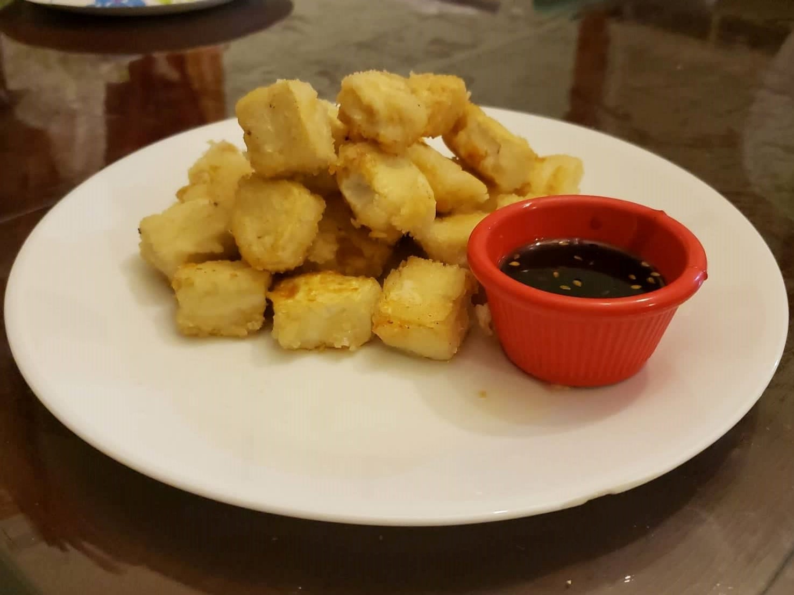

Crispy Tofu

Ingredients:
- Firm Tofu
- Sweet potato starch
- Oil for frying
Instructions:
- Properly dry the tofu blocks by covering with paper towels and letting the moisture slowly squeeze out by placing under a weight.
- Cut the tofu into small cubes, about 9-12 per block of tofu.
- Dredge the tofu in the starch and immediately place onto a pan with oil over medium heat. Waiting too long will cause the starch coating to become soggy.
- Fry for about 1-2 minutes on each side or until golden.
- Serve with teriyaki dipping sauce.